有些人是“顺毛驴”，顺着毛捋，他就给干活儿。如果你呛着一捋，他就尥蹶子。对天地的变化，我们也要顺着，跟着它走，因为胳膊拧不过大腿。
人一旦大病一场后，就会大彻大悟，开始对自己以前的所作所为有所忏悔，这是一个觉悟的过程。
有坏情绪、不良情感、思想，都是因为肉身出毛病了。
经文：
逆春气，则少阳不生，肝气内变；逆夏气，则太阳不长，心气内洞；逆秋气，则太阴不收，肺气焦满；逆冬气，则少阴不藏，肾气独沉。
梁冬：前面是比较难讲的一段。请问您现在有什么心得想跟大家分享吗？
徐文兵：上一段确实比较难讲。因为第一，这一段里有错简，把别的地方的话接到这儿来了；另外，它有漏字，有脱落字，所以我们只能结合着《易经》里的 “天行健”等一些话来互相参照。
道家的思想是这样，叫“得意忘形”，就是文字和话传达的都是一种真实的意思，意思到了，可以不在乎用的是英文、甲骨文还是其他什么文。“得意要忘形”，不要注重它的形式。关键是你要沉浸到那个氛围当中去，确实跟古人的思想产生共鸣，能体会到他的意思，这也是我们读《黄帝内经》时的一个方法和诀窍。就是说，如果你碰到有些字确实解释不了，那就不要解释，跳过去。
读《黄帝内经》时，如果你碰到有些字确实解释不了，那就不要解释，跳过去。
比如说，有句话叫“天明则日月不明”，这明显就是一句错话。但后来有人说这里的“明”相当于萌芽的“萌”，这就等于是歪批三国，是牵强附会。这就说明这一段有漏字脱简，我们给它订正了。但是，我们的学习还有个否定的过程，你可能认为古人的这句话说错了，但没准十年过后，你觉得不是古人错了，而是我们理解力不够，又把自己给否定了，这就是个进步。所以，“故书不厌百回读，熟读深思子自知”，《黄帝内经》就是要反复读。
“故书不厌百回读，熟读深思子自知”，《黄帝内经》就是要反复读。
很多朋友在博客上问我一些问题，我现在真的不能一一作答，但我把一些类似的，大家都关心的问题统一做一个答复。像关于失精的问题，《黄帝内经·素问》中的“上古天真论”说：“精神内守，病安从来。”很多肾气不固的人就有遗精、遗尿的现象。还有的小男生误交损友，从小就学会了把玩自己的生殖器，喜欢手淫，而且一发不可收拾。他们到了这种地步就会上瘾，跟吸毒一样。吸毒也是一种病态的需求，是在追求一种快感，而靠自己的意志不能控制。
一定要把手淫看成是一种疾病，一种身心疾病。因为手淫是先伤自己的精，然后是气，最后让自己产生自卑、自责、负疚等一系列不良的情绪。
很多人说别人吸毒是因为意志不坚定，而我思想很坚定，便想跃跃欲试，“来，我也试试吧，我就给你们做个示范，我可以戒掉。”结果一吸就完蛋了。
所以，大家一定要把手淫看成是一种疾病，一种身心疾病。因为手淫是先伤自己的精，然后影响到了自己的气，最后黯然神伤，让自己产生自卑、自责、负疚等一系列不良的情绪。有些人做的时候控制不住，事后又懊悔。这时你要把它当成一种症状去看，去找医生，特别要是找那些认为精是宝贵的中医大夫。
梁冬：有什么办法吗？
徐文兵：当然有。我们说先去心火。精越弱，体内的“水”好像漏干了，“火苗”就显得越旺。越是精不足的人，他越压不住火，表现在外就是性欲亢奋，冲动越强。相反，那些精足的人，这方面反而不是那么强烈，很淡。比如说，他有这个需要、欲望，他也能做，但他不会老小火苗“噗噗”直冒。
精不足的人，可用一些滋补肾阴，用水去克火的方法来调治。先把它敛回来，收住、补住。“漏洞”补好后，再去吃一些血肉有情之品，或者用一些补肾、益肾的药。因为这些男孩子都是正值二八一十六到三八二十四这个阶段，正是生长、发育的一个高峰期，即使他得一些病也容易恢复。你要是七老八十、五六十岁还伤了精的话……
越是精不足的人，他越压不住火，表现在外就是性欲亢奋，冲动越强。
梁冬：估计七老八十的人也没这瘾了。
徐文兵：七老八十也有漏的，也有肾虚、脑萎缩等症状，远的事忘不了，现在的事又记不住。我有一些朋友听完《黄帝内经》的课以后，对中医特别神往、向往，说想拜师学艺。我就建议大家先去读一些相关的书，细水长流地把《黄帝内经》给消化了，然后缘分到了，你的老师自然会出现。
中医有个特点，不是学生找老师，而是老师上赶着追学生，说：“求求你啦，快跟我学医吧。”因为一个学生的根器、悟性、素质决定了他能不能学中医，能不能学好。所以，大家慢慢地学着正心、诚意、修身，你自己先慢慢做着这三步，机会自然会来。
中医有个特点，不是学生找老师，而是老师上赶着追学生，说：“求求你啦，快跟我学医吧。”
春天不生，肝胆受损
徐文兵：前面的第一大段，我们讲了应该怎样随着四季的变化去养生、养长、养收、养藏；讲的是老天爷在不正常的情况下会给我们带来什么危害；还有，即便是在时令不正、节气不好，比如说“地气者冒明”“白露不下”“交通不表”的状态下，那些掌握了天地变化规律的人照样不得病。就是说即使天气有大的异常波动，只要你懂得养生之道，身体也照样没事。
最后一段说的是天气没变化，还是春、夏、秋、冬正常地四季交替，但你做了一些违背天道的事儿，也容易伤害到自己的脏腑，容易出现一些疾和病。
对天地的变化，我们要顺着，跟着它走，因为胳膊拧不过大腿。
梁冬：所以说，人的主观能动性还是很重要的。
徐文兵：有些人是“顺毛驴”，顺着毛捋，他就给干活儿。如果你呛着一捋，他就尥蹶子。对天地的变化，我们也要顺着，跟着它走，因为胳膊拧不过大腿。
将来，我要把病人对自己的病史描述集结成一本书，起个书名就叫《我是怎么伤害我自己的》。
人一旦大病一场后，就会大彻大悟，开始对自己以前的所作所为有所忏悔，这是一个觉悟的过程。
人一旦大病一场后，就会大彻大悟，开始对自己以前的所作所为有所忏悔，这是一个觉悟的过程。你把这些病了以后的人写的东西记录下来，对其他人来说其实是个警醒。
梁冬：“逆春气，则少阳不生，肝气内变”。春天是生发的季节，那做什么事是逆春气的呢？
徐文兵：在春天，如果你杀气腾腾的，那就是逆春气的表现。春天是阳气回升，天气渐暖，地气上升的时候，整个人的阳气是蒸腾的。如果你全身怕冷、变凉了，那就要注意了。
在春天，如果你杀气腾腾的，那就是逆春气的表现。
为什么要春捂？为什么种子种在地里要覆盖地膜？这其实是给那些在春天发芽的蔬菜、植物穿一件“保暖内衣”，以防来个倒春寒，刚发芽的植物、蔬菜一下全冻死了。
据说，北京过了清明就不会有太凉的寒气来临了。有一年清明节过后，我就把办公室里养的那棵大橘子树和昙花给挪到院外，让它们接受自然之气。结果搬出去的第二天，天气就变冷了。
在春天，我们要鼓励生，鼓励长，要温暖，不要着凉。除了这些，我们还要吃什么？
梁冬：要吃有助于肝气生发的食物。
徐文兵：春天是主生发的，所以要吃辛辣或是辛凉、发散的食物，不要吃酸的，也不要喝原本应该是秋天喝的果汁。春天不是喝果汁的季节，秋天才是。都说早喝一杯果汁，晚上再喝一杯果汁有益健康。我说这得看是什么季节。春天是阳气刚刚来临、生发的时候，我们在这个时候不应该过于开放，过于激烈地去奔跑。《黄帝内经》说春天要“广步于庭”，而不是到雪地里去撒野。你要那么做就叫“逆春气”，结果就是压抑了肝胆的生发之气。
春天是主生发的，要吃辛辣或是辛凉、发散的食物，不要吃酸的，也不要喝原本应该是秋天喝的果汁。不应该过于开放，过于激烈地去奔跑。
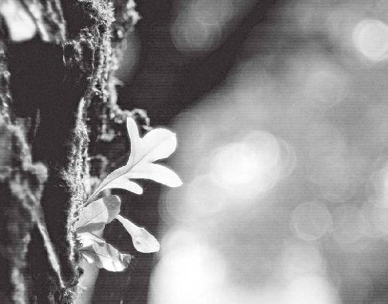
春天是生发的季节，我们要鼓励生，鼓励长，做一个身体和心灵都温暖的人。
梁冬：就是少阳。
徐文兵：什么叫“少阳”？
梁冬：少阳胆经啊。
徐文兵：我们在讲“上古天真论”的时候说过“阳明脉衰，面始焦，发始堕”，然后是“三阳脉衰于上，面皆焦，发始白”。这个“阳”是指我们的六腑。“阳”又是什么意思呢？跟外面有接触的，向外面沟通开放的叫“阳”；而深藏在里面，大门不出，二门不迈的，叫“阴”，也叫“脏”。所以，“少阳”是六腑里面的一个名词。还有，任何事物都可以分成阴和阳，但阴阳里面还可以再分仨。
“少阳”，代指足少阳胆经。
“阳”指人的六腑，是跟外面有接触、向外面沟通开放的；“阴”也叫“脏”。
阳气里面，分阳中之阳，比如说像梁冬这样永远阳光灿烂，充满活力的人，叫“太阳”。中间叫少阳，《黄帝内经》讲“少阳为枢”，什么叫“枢”？
梁冬：变化之机。
徐文兵：就是开门的门轴，它控制着门的开合。打开了就是太阳，合住了就是太阴。少阳在体表循行的路线在哪儿？中间。前面腹部、胸腹为阴，后背为阳。少阳就在人体的两侧，这叫“枢”，正好是个门轴。
那阳气里边偏弱的，有点娘娘腔的叫“阳明”。早晨太阳刚刚升起的时候，天亮了，但是还很冷，那叫阳明；“太阳”是正午过后，午后的烈日；“少阳”就是快到夜半了，大概是晚上的九点到一点。尽管天黑了，但白天的余温还在。所以，“少阳”代指足少阳胆经。
“少阳为枢”，“枢”是开门的门轴，它控制着门的开合。打开了就是太阳，合住了就是太阴。
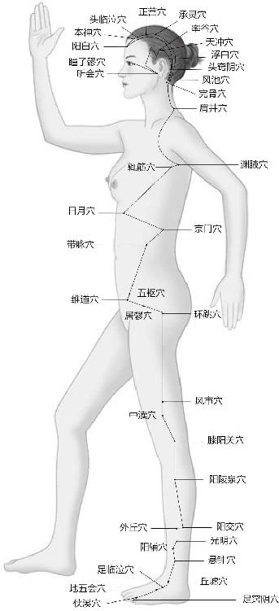
足少阳胆经
中医认为，肝和胆互为表里，就是说它们是partner，一个在里面藏着，另一个在外面代言。谁出头露面呢？大家见到的是胆，其实它的背后是肝。有个成语叫“肝胆相照”，胆储存的是胆汁，胆汁哪儿来的？肝分泌的。
早晨太阳刚刚升起的时候，天亮了，但是还很冷，这叫阳明；“太阳”是正午过后，午后的烈日；“少阳”就是快到夜半了，大概是晚上的九点到一点。
梁冬：为什么胆在外面？
徐文兵：你从嘴里面伸进去一个钩子，能够捅到胆。因为十二指肠有个分泌胆汁的出口，出口处有块肌肉叫“奥狄氏括约肌”，它收紧的时候，胆汁在里面藏着。当你一吃肉，或是吃点油腻的东西时，它马上就开始分泌里面储存的胆汁，干吗？去帮助你消化这些肉。
梁冬：那我们平常吃完肉后如果不消化，吃点儿苦的东西会有好处吗？
徐文兵：有！中医里面的很多动物药，比如说蛇胆、熊胆，还有牛黄、马宝、猴枣，这些都是用动物体内的胆结石，或者是它们的胆汁提炼出来的，都是药物。当你胆汁分泌不够的时候，我们可以借助一些外力来暂时缓解你身体的症状。这就是我们讲的“少阳”。
但如果你“逆春气”的话，就活活把少阳给压抑住了。胆如果亢奋，就会不停地分泌胆汁，最后能把你的胃肠都给消化掉。很多人都得过一种病，叫“胆汁返流”。
胆的开口本来是向着十二指肠的，然后到小肠。而小肠是一个化食物的地方，我们吃进去的肉就是在这里给化掉的。胃是由平滑肌构成的，如果分泌的胆汁返流到胃，结果就把胃壁给腐蚀了，慢慢地，我们就会得糜烂性胃炎，或者是胃溃疡，甚至会出现化脓的现象。
梁冬：那什么时候会出现倒逆的情况呢？
徐文兵：倒逆就是因为人体内的胆气过亢。
在生机萌发，气血萌动的春天，我们切忌将生机、气血扼杀在摇篮中。如果做了“逆春气”的事儿，你的胆功能就会衰退。
梁冬：艺高人胆大。
徐文兵：表现在外就是每天早晨起来觉得口苦。这个苦味儿是哪儿来的？自己的胆汁返流上来。还有很多人会呕吐，吐得胆汁都出来了。这些人不是因为“逆春气”，而是宣发得有点儿过度了。另外，胆气不生的人是极度压抑的人，小荷本来才露尖尖角，结果一下就被人“咔嚓”掉，生发不出来了。有一句歌词叫“我是一只小小鸟，没想到飞上枝头以后却成了猎人的目标”，被射杀了。
所以，在生机萌发，气血萌动的春天，我们切忌将生机、气血扼杀在摇篮中。如果做了“逆春气”的事儿，你的胆功能就会衰退。
梁冬：春天的时候，公司是不是不应该裁员呢？
春天的时候，公司应该尽量少裁员。
徐文兵：如果是迫不得已，你也要讲究方式。都说打人不打脸，骂人不揭短。你可以尽量在意识层面上把这件事儿很理性地解决。船要沉了，要不大家一起沉，要不谁能先逃生，就先逃生。道理大家都明白，所以一定要给被裁的人留足面子。
我知道有些仁义的老板到裁员的时候，会给员工发“N+1”的薪水。什么叫“N+1”？就是你在我这儿工作了5年，我给你“5+1”，即6个月的薪水，然后再给你介绍一个下家，这样就不伤人心。
“不伤心”，就是不伤他的神。
什么叫“不伤心”？其实是不伤他的神。因为精气神是鼓动人生机的东西。这样的话不伤人，还会成为朋友，当你落难的时候，以前为你工作过的人没准儿还会来救你。我看很多人是又失人又失心。本来是挺好的合作者，最后就翻脸，甚至是反目成仇。
任何疾病的发生、发展都有一个由表及里、由外及内的过程，就是先有腑病，再有脏病。
梁冬：什么叫“肝气内变”。为什么会“肝气内变”呢？
徐文兵：这就是我们说的“表里”问题。任何疾病的发生、发展都有一个由表及里、由外及内的过程。人要得病的话，比如说得肝胆病，他是先得胆病，也就是外在的、露在外面的器官会先病。等它病得实在不行了，就会伤及到里面。就是先有腑病，再有脏病，是这么一个过程。所以《黄帝内经》说：“逆春气，则少阳不生，肝气内变”。
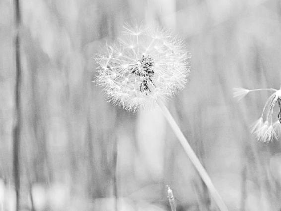
春天不好好生，会伤肝、伤胆，人也将飘摇不定。
另外，胆气被压抑以后，胆汁分泌不畅，人就会得胆结石。为什么？因为胆里面本来是储存着胆汁的。但当胆汁需要被排到消化道去消化食物的时候，人突然用意识或者是用强大的压力，包括生气，把它给控制住了，不让它排出去。我们说“恨由心头起，恶向胆边生”，人在发怒的时候，肝其实是在突然高强度地工作，并释放血糖。
西医讲肝是一个储存能量的器官，我们讲肝藏血，平时你要是不动，“雄兔脚扑朔、雌兔眼迷离”，那肝这儿藏着血；当我们的身体特别需要，突然要救火、要打架的时候，肝就会把血输送到全身的各个部位，这时人会搬动在以前根本不可能搬动的东西。为什么？因为你有了额外的气血。当肝工作的时候，胆汁分泌也开始旺盛起来，这时候会发现人在发怒的时候，胆子变大了。
人在发怒的时候，肝其实是在突然高强度地工作，并释放血糖。胆子也会变大。
梁冬：所以说“胆大妄为”嘛。
徐文兵：“胆大妄为”就是胆里的胆汁变得充盈起来了。所以有一些无良的人为了取熊胆汁，就把熊关到笼子里，然后给它做“胆管引流”的手术，接根管子到它的胆里面，然后在管子的另一端挂个瓶。当熊分泌胆汁的时候，胆汁就沿着管儿流到了瓶里。这样他就不用“杀鸡取卵”了，以前他们是杀一头熊取一个胆，现在他们可以源源不断地制造熊胆汁。在取胆汁之前，他们还要先去激怒熊，熊一生气，肝就分泌胆汁，然后胆汁流到那管里，接满了，他就拿去卖钱。
梁冬：太恶劣啦！心地太狠毒了！
徐文兵：如果你生气了，肝就会分泌胆汁，但是胆汁憋在胆里面不能出来。
梁冬：胆汁怎么憋着不出来呢？
徐文兵：因为你在压抑自己的怒气呀！我生气，本来要打你，如果打了，心头的怒气就泄掉了。但如果我不打你，气就憋在了心里。
患有胆结石的人，往往都是隐忍不发的人，是好人，他不愿意伤害别人，最后就伤到了自己。
患有胆结石的人，往往都是隐忍不发的人，是好人，他不愿意伤害别人，最后就伤到了自己。所以胆如果不分泌胆汁，长期在那儿沉淀，就形成了结石。先表现为胆结石，结石累积多了，胆管内就出现了结石，甚至肝管内也会出现。这就是压抑太过了，由胆伤到了肝。
除了得胆结石、胆囊息肉，有些人甚至还会得胆萎缩。
梁冬：为什么胆又萎缩了呢？
徐文兵：萎缩就是被压抑了。相反的结果就是胆囊炎。胆突然被感染了，接着就会出现高热、呕吐、黄疸等现象，这是另一个极端，是阳性的极端。阴性的极端就是慢慢地形成一种结石、息肉，最后自己萎缩，这就是怒气被压抑的结果。
有个成语叫“肝胆相照”，兵法里边有一个用兵之策叫“李代桃僵”。肝能把分泌的胆汁储存到胆里面，同样也会把一些毒素排到胆里面。如果胆在，那肝里面的垃圾、病毒就有一个排泄渠道，有个出口，这样就能保证肝的健康。
徐文兵：如果很多肝病患者的胆还在，那他就有一个排泄渠道，有个出口，这样的话就能保护肝。肝和胆谁重要？切了胆，只要肝还在，人就还能活。肝没了，人基本上就不能存活了。有胆在，肝幸存的几率就会更大，所以说它们俩是互相照应的，而且有时候胆起了保护肝的作用。
切了胆，只要肝还在，人就还能活。肝没了，人基本上就不能存活了。
在古代没有冰箱，那屠户卖猪肝，怎么卖？他在没人买之前，就在猪肝上带着苦胆，等买家说了“我要这块儿肝”后，屠户才把胆切了，才给你秤猪肝。这时候你拿着猪肝回家炖汤，或者是熘肝尖儿，很新鲜。但是如果你早早地把胆给切掉，那猪肝就少了保鲜措施。
梁冬：然后肝就会变味儿。
徐文兵：所以有充盈着胆汁的胆在，它就对肝起到了保护作用。中医发现用人的胆汁或者动物的胆汁，来治疗一些严重的肝坏死就有效果，这其实是对肝起到一个解毒和脱毒的作用。所以，我建议大家轻易不要做胆切除手术。
我不反对现代科学，比如说，如果你感染了急性胆囊炎，就容易昏迷、发高烧，甚至会引发腹膜炎，到这个时候，你再不切，那就要命了，“两害相权取其轻”，我不反对。但一般来讲，如果你能把胆保住，能不切，你还是不要切的好。切了以后，容易得肝管内结石，又容易伤肝，所以我们轻易不要伤自己的胆。
梁冬：胆是解毒的吗？
徐文兵：它是以毒攻毒。胆本身寒气很重，所以当你体内有热毒的时候，蛇胆、熊胆，包括牛黄，都是非常好的清热解毒药。
梁冬：因为它们都苦嘛。
徐文兵：苦寒。苦的东西里也有苦温的，比如说馒头片儿烤焦了就是苦温的。所以胆汁本身是一种很好的药，《伤寒论》里面就记载了，白通加猪胆汁汤的方子对治疗危重症心衰的病人很有效。以前给人灌肠，就是给人通大便，其中有个方法就是用胆汁来通。胆汁有个作用就是能促进肠道的蠕动。既然你身体每天都在分泌这么好的一味药，你干吗要活活地把它切掉呢？
人有十二条经，为什么就独独要敲胆经呢？《黄帝内经》有一句话——“十一脏皆取决于胆”。
梁冬：那平常我们怎么去保护自己的胆呢？
徐文兵：你不要逆春气，不要压抑自己的胆气。吴清忠曾提出过一招三式，敲胆经。人有十二条经，为什么就独独要敲胆经呢？人体有十二个脏腑，《黄帝内经》说凡十一脏皆取决于胆，所以我们平时要多敲敲胆经，护理好我们的胆。
俗话说：“一年之计在于春”，人活这一辈子，长短和质量真的取决于春天。胆的功能衰弱以后，就好像门的轴儿坏了。该关门的时候关不严；该敞开门的时候，它又打不开。收放都不自如。
人活这一辈子，长短和质量真的取决于春天。
梁冬：以前都说“胆大妄为”，那是不是意味着人的胆比较大的时候，做事情就会比较决断一点？
徐文兵：对，胆主决断。两只狗打架，往往是体形较小的狗把胖大、魁梧的狗吓得直躲，这是一种气势。中医在解剖的时候，他也看患者的脏腑器官，但他们更关注背后的能量。有的人确实胆大，比如说姜维就胆大如鸡卵，他的谋略、决断力就很强。不过有些人的胆不见得有那么大，但他的决断力依然很好。
这就说明胆分泌、排泄胆汁的功能越强，这人就越厉害。凡是做武将的，他的胆功能基本上都很好。我们讲“肝胆开窍于目”，做武将的很少有戴眼镜的，或者说眼睛近视的。战场上是瞬息万变的，战机稍纵即逝，所以你需要马上就做决定。像我这种戴眼镜的人，是往左打，还是往右打；是往前攻，还是往回撤，往往犹豫半天还是拿不定主意，结果是主意还没拿定，敌人就攻上来了。这就像那头驴的故事一样，左边一堆草、右边一堆草，驴就在那儿想：这到底该吃哪堆草？最后这头驴饿死了。这就说明这头驴的胆不行，需要多敲胆经。
如果胆分泌、排泄胆汁的功能越强，这人就越厉害。凡是做武将的，他的胆功能基本上都很好。、
梁冬：所以，“逆春气则少阳不生，肝气内变”。
徐文兵：胆切除以后，人体就会存在一个问题，也就是说一次不能吃很多肉了。在平时，胆储存的胆汁量足够消化掉我们突然吃一顿烤肉、一顿大餐的量。但是如果你没有了胆以后，你就缺少了这种缓冲，这种时候再突然吃一次大餐，就会吃得自己上吐下泻。你只能缓慢地，少食多餐。
有些人患了脂肪肝，有些人的肝内出现了血管瘤，还有些人的肝感染了炎症，患了甲肝、乙肝、丙肝，甚至还有人得了肝硬化，出现了肝癌。这些毛病的根源都来自于胆。
另外，肝气内变的话，首先伤到的是我们的胆，接下来才会伤肝。现在很多人有肝病，有些人患了脂肪肝，有些人的肝内出现了血管瘤，还有些人的肝感染了炎症，患了甲肝、乙肝、丙肝，甚至还有人得了肝硬化，出现了肝癌。这些毛病的根源在哪儿呢？
梁冬：都来自于胆。
徐文兵：对。你想想，任何疾病，包括癌症，都不是一天就能长成的，它是一个无中生有、由气变成有形，然后凝聚成形的过程。而且任何疾病都有个由表及里、由腑至脏的发展过程。所以，高明的大夫绝对是由浅知深，由表知里，见微知著，然后把疾病扼杀在萌芽、摇篮里。而且高明的大夫能把你的脏病“李代桃僵”，引到腑上来。本来是肝上长了个东西，结果导致胆出现了溃烂，或是其他的一些问题，最后就让它泄掉了。
“李代桃僵”就是说本来是髓病，你把它转移到骨上；本来是骨病，你把它转移到筋上。其实，这就是将深的病根儿拔出来的一个过程。但这样会有个什么问题呢？春天本来是生发的季节，结果有些人生发过头了，把自己那点儿底子都给掏空了。比如说胆汁压制不住地往外排，但有些人整天在透支自己的胆汁，有点儿就用，这些人都嗜食辛辣、肥腻食物，吃饭的时候离不了辣的，离不开肉。一吃辛辣的食物，肝胆之气就被鼓舞出来了，胆就开始充分地工作，然后排胆汁，你再适时地吃点儿肉，胆又需要分泌胆汁把肉消化掉。再加上现在的人经常熬夜，体内整天阳气过多，阴气太少，这些人就过度消耗了自己的肝、胆，出现了资源枯竭的症状。
春天本来是生发的季节，结果有些人生发过头了，把自己那点儿底子都给掏空了。这些人慢慢地就开始觉得眼睛流不出眼泪了、眼干了；觉得鼻子也干了，嘴也干了，最后还会出现胆结石，甚至是肝胆开始出现萎缩。
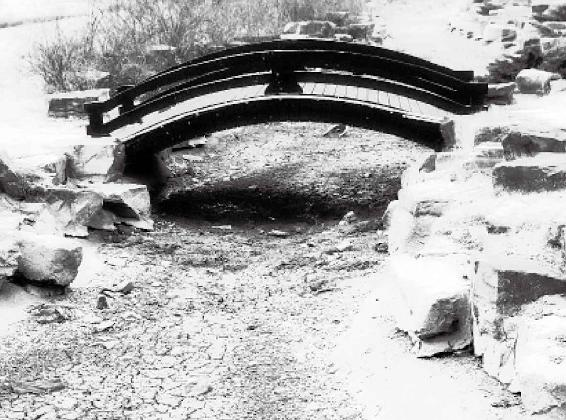
万事都有一个“度”，平日不懂节制，把自己掏空了，终有一天连眼泪也会干涸。
梁冬：什么地方的资源枯竭了？
徐文兵：胆本来应该藏胆汁的，最后它干了。到该用的时候，它没了。这些人慢慢地就会出现一系列干燥的症状，开始觉得眼睛流不出眼泪了、眼干了。慢慢地觉得鼻子也干了，嘴也干了，最后还会出现胆结石，就是胆里面出现了多余的东西。甚至是肝胆开始出现萎缩，这些人需要滋阴，最好不要再吃辛辣、发散的食物，每天早点儿睡觉。养胆的时间正好是子时，也就是十一点到一点，记住，是当地时间。
徐文兵：如果你出现了比如说眼睛干涩，鼻子、嘴巴都干了这些症状，辛辣的食物就不要吃。那吃什么呢？
如果眼睛干涩，鼻子、嘴巴都干了，就不要吃辛辣的食物，吃“望梅止渴”的那个梅。
梁冬：酸一点的东西呀。
徐文兵：对，这种人就该吃“望梅止渴”的那个梅。中医里有个方子叫“乌梅丸”，是很有名的救命药，也是中医救急症的一个方剂。腊梅还在严冬的时候就开始绽放了。青梅也是在春夏之交或是夏初就开始结果了。
我们常说青梅煮酒论英雄，喝酒的时候为什么要加点儿话梅？其实这是用青梅的酸来收敛、平衡一下酒的辛散之性。好朋友来了，你就能多喝几口。平常吃辛散的食物太过，吃肉太多了，把自己体内的那点儿阴精消耗得过头的人，就应该适时地喝一点儿乌梅汤。
喝酒的时候为什么要加点儿话梅？
梁冬：喝点儿醋行吗？
很多抑郁症、失眠症患者都有一个特别明显的症状：睡到半夜两三点就醒来，再也睡不回去了。
徐文兵：喝点儿醋也行，不过最滋阴的还是酸梅汤，如果能加点儿其他的中药，比如说玳玳花，再加点儿冰糖炖一炖，非常适合现在喝。我治疗过的很多抑郁症、失眠症患者，他们都有一个特别明显的症状，不是睡不着，而是早醒。睡到半夜两三点就醒来，再也睡不回去了。
我们说肝是藏魂的，“人卧则血归于肝”。如果少阳被伤了，你又伤到了肝，那肝就什么都收敛不住了。你老拿发散的食物，比如说麻辣小龙虾、香辣蟹、干锅鱼等，整天都吃这些食物来刺激食欲、提胃口。这时候就得吃点儿酸性、收敛的东西，让肝血、阴精藏一藏，这个方法正好跟胆结石的治疗方法是相反的。
“人卧则血归于肝”。
我是反对食品乱用添加剂的，我现在就有个疑问：任何食品被包装后都存在保鲜的问题。我们都知道，家里的冰箱低温运行那么一两天，放在冰箱里的食物都要坏，即使你放一碗清水在里边也会变馊，那食品怎么解决保鲜的问题？
如果老拿发散的食物，比如说麻辣小龙虾、香辣蟹、干锅鱼等来刺激食欲、提胃口。那就得吃点儿酸性、收敛的东西，让肝血、阴精藏一藏。
所以我建议大家最好去吃新鲜的东西，不要吃那种固定包装的东西。
建议大家最好去吃新鲜的东西，不要吃那种固定包装的东西。
梁冬：奢侈一点是自己回家熬酸梅汤。
徐文兵：对了，何乐而不为呀！
梁冬：“逆春气，则少阳不生，肝气内变”里的“变”有点意思。
徐文兵：这种“变”说出了人体里很多不正常的变化。肝纤维化，肝里面出现了肿瘤，这都是变，而且都是不正常的。
梁冬：那很多患有肝病的人如果要治疗的话，最好从春天开始。
徐文兵：对。以前我们说到了近视眼的问题，如果到了非得做手术不可的地步，那什么时候做效果最好？等到肝气特别旺盛的时候去做。你别等到秋天杀伐之气起来了，再在眼角膜上划一刀。有的网友追着问我，近视眼的矫正手术到底应不应该做。我说实践是检验真理的唯一标准，如果你肝胆的气血确实充盈，那可以做。但是如果你信奉自然的养生之道，那就戴副眼镜吧，还能显得有点儿学问。
心肠要热、要软，这是健康的表现。有些人心肠很硬，很无情，实际上他是病人。
还有，在夏天心火最旺，心对应什么？小肠，它又叫手太阳小肠经。“太阳”就代指小肠。我们经常说“心肠要热”，指的是什么？
梁冬：就是心和小肠。有些人心肠很硬，很无情的样子，实际上他是病人。
徐文兵：对，其实他表现出来的那种情绪、情感就让人觉得这人很冷血，心如铁石。我告诉你，我治的病人里面真有心如铁石的。什么感觉？针都扎不进去，针都扎歪了。有时候，我跟病人开玩笑说：“您这是修炼了多少年才修炼成这样？”
那些克己复礼、严于律己的人，把很多不好的情绪、情感深深埋在心里，形成了一个个结，时间长了，就变成了一个个隐患，最后爆发出一场大病。很多人为什么到最后会痛不欲生，要寻求安乐死？这其实都是他这一辈子积攒下来的负面信息和能量形成了有形的物质，然后变成一种深刻的，彻骨的痛，折磨得他痛不欲生。
克己复礼、严于律己的人，往往把很多不好的情绪、情感深深埋在心里，形成了一个个结，时间长了，就变成了一个个隐患，最后爆发出一场大病。
梁冬：所以人还是别太扭曲自己。
徐文兵：要得善终的话，就要气脉常通、肾气有余。
夏天不长，人会抑郁
梁冬：“逆夏气”里，什么叫“夏气”呢？
逆夏气的五种表现：1.在夏天吃冰棍儿；2.在夏天吹空调；3.让自己憋屈，不去示爱，反而去发泄自己的仇恨；4.不及时补充自己体内的盐分；5.着凉。
徐文兵：在夏天，我们要养长。前面我说了“夏三月，此为蕃秀”，人要“无厌于日”，使皮肤得泄，“若有爱在外，使志勿怒”。
逆夏气的方法很多：第一，在夏天吃冰棍儿；第二，在夏天吹空调，这都是逆夏气。然后还有什么？
梁冬：在夏天，情侣闹分手。
徐文兵：对，“使志无怒”嘛。就是说，在夏天让自己憋屈，不去示爱，反而去发泄自己的仇恨，这些行为都不对。还有就是不及时补充自己体内的盐分，因为在夏天，你出汗多嘛。最大的问题就是夏天着凉，在夏天吹空调是外面着凉，吃冷饮则是肚子里面着凉。这些逆的结果就会让你的心肠变冷。
梁冬：现在很多人是吹着空调吃冷饮，够狠的。
徐文兵：我曾经诊治了一个从珠海来的朋友，他说自己最近突然失眠，睡不着觉，还出现了斑秃。1965年生的，是个创业者，事业做得很成功。
我对他说：“你不能吃冷饮了，水果也要少吃。”
他说：“我吃冷饮没限制的，别人吃冷饮都会肚子疼，我吃了以后，什么事儿也没有。”
梁冬：因为他内心已经足够冷了吗？
徐文兵：麻木不仁嘛。我告诉你，自个儿说胃疼、胃酸、肚子胀、打嗝儿、嗳气的，我都不怕。我就怕那种一号脉、一诊断，胃里面有大面积的凝滞、结块，而他自己却浑然不觉的人。这种人到医院一检查，80%以上都是要么患有萎缩性胃炎晚期，要么就是胃癌早期，因为他没有知觉了。
有知觉的人，如果吃了不合适的东西，就会吐、会拉，那是健康的表现。别人吐得一塌糊涂，这个人却若无其事，那他病得最厉害。因为他失去了对毒素或者是对自己身体有伤害的东西的防御能力。
梁冬：对，所以我们还是要做个觉者。
徐文兵：对，要恢复知觉。如果你逆着夏天的养生规律过日子的时候，你先伤到的是小肠，就是“太阳”。
我们肚子里面有两个“太阳”，一是足太阳膀胱经，它走后背，从腰背、胭窝到脚后跟，手太阳小肠经走的是肩背。
我们身体里面有两个“太阳”：膀胱经，小肠经。
现在很多人都患有颈肩综合症，这时去看一下他疼的那些部位，再看看那些部位循行的经络，一看，小肠受寒了，最典型的症状就是小鱼际呈青色的。
很多人都患有颈肩综合症，那小肠受寒了。
梁冬：如果你逆着夏气走的话，就会伤到自己的小肠。
徐文兵：小肠，我们又叫“赤肠”，就是红热的意思。它的毛细血管特别丰富。中医认为小肠是泌别清浊的地方，就是说你吃进去的物质，它能分清别浊。食物消好了、化好了，变成了水谷精微，就被小肠吸收到体内，那些污浊、糟粕的东西，就被小肠运到了大肠。
所以正常情况下，小肠应该是火热的，温度很高的，我们说，心肠要热。小肠的温度高了，就给消化酶包括胆汁提供了一个特别好的工作环境。小肠一热，就把那些营养物质都化掉了，进一步转化成你身体需要的精血。
小肠受寒了，最典型的症状就是小鱼际呈青色的。
很多人说“我吃了××营养物质”。我说你又不是试管，不是吃什么营养物质就能被你吸收的。有些人尽管他没有吃什么营养物质，但他也不缺营养，原因在哪儿？在于他有化的功能。牛羊吃的即使是草，它也长肉，也长骨头，而且还不缺钙。关键是它能化，所以小肠是我们人体特别重要的一个器官。
很多人说“我吃了××营养物质”。我说你又不是试管，不是吃什么营养物质就能被你吸收的。
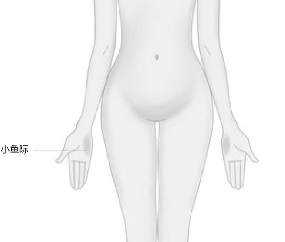
小肠太冷了，冻得“小鱼际”都青了。
在夏天、春天，“少阳不生”，在这儿叫“不长”，这样的话，你就没让小肠热乎过。
梁冬：小肠在哪个位置？
徐文兵：小肠叫九曲回肠。具体的解剖位置是环绕着肚脐一圈圈的，全是小肠。
梁冬：有时候，医生摸患者的肚脐附近，就是看看他的小肠的健康状况。
徐文兵：有些人你把手搭在他的肚脐上，就能感觉到……
梁冬：丝丝寒意。
有些人，你把手搭在他的肚脐上，就能感觉到丝丝寒意。
徐文兵：丝丝寒意还不错。有的跟小烟囱一样，“嗖嗖”地冒凉风——心肠寒了。
梁冬：这就是郭德纲说的“满腹痉挛”。
徐文兵：很多人得了抑郁症，或者是大脑里面缺五羟（qiǎng）色胺，缺这个，缺那个，你光给他从外面注射药物没用，你怎么不想想，正常人是可以自己制造的。
梁冬：那为什么患抑郁症的人体内没有呢？
徐文兵：这就是因为他在夏天没长，而是把它给冰镇住了。
梁冬：所以年轻的女性朋友穿露脐装是很危险的。
徐文兵：先伤小肠，下一个就是伤心了。我注意到，有几位名人得的是与小肠有关的病，其中一位是日本的前首相，叫桥本龙太郎。我有个爱好，就是喜欢研究这些人是怎么死的。有些人的资料是公开的，有些人的资料是事后解密的。我就研究这些人得的是什么病。桥本龙太郎是因为小肠出血而死的。古巴的卡斯特罗得的病也跟小肠有关，也是小肠出血。其实，小肠出血是心病的一个先兆。而小肠变寒是将来你得抑郁，往阴寒负面走的一个前兆。所以在夏天，大家要记住，一定要活得热烈些。
穿露脐装是很危险的。
梁冬：传说中的“神功元气带”还是有一定作用的，起码能焐肚子的。
徐文兵：当然有道理。只不过有些东西的功效不能说得太过。你要说某某东西包治百病，那就是像现在说的“喝水包治百病”一样，那喝水还能得百病呢。任何事情不要太过，但我们穿件肚兜儿，护住自己的肚脐是对的。
小肠经有两个代表穴，一个在肚脐上边的一寸处，叫水分穴。什么叫“水分”？喝进去的清水、浊水在这儿一分为二。
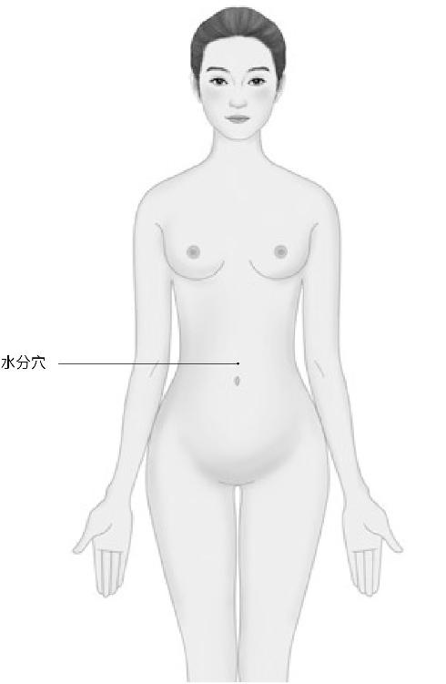
水分穴，分辨清浊的正义之士。
小肠有泌别的功能，其实就是它的膜有透析功能。人体最奇怪的就是体内的膜，你是我们这个圈子里的人，那你能进来；如果你进不来，那你就永远被挡在圈外。这层膜是有灵性的，它能有选择地把人体需要的东西吸收进来，把污浊的东西透过这层膜排出去。
所以人健康的话，小肠是分清浊的，清气上升，浊气下降。小肠一旦失去了这种功能，“敌人”进来了，“好人”反而被排挤出去了，最后这人就死掉了。所以我们经常说，心包括唯物主义的心包，以及唯心主义，形而上的思想、意识和感情。如果你抓不到无形的东西的话，你能抓住谁？你能“抓”住小肠吗？把小肠“抓”住了，把小肠的温度提高了，保持它体内的“太阳”的热度，然后让小肠疏通、通畅了，不要让它有瘀滞，这个人的心情绝对坏不到哪儿去。
心包括唯物主义的心包，以及唯心主义，形而上的思想、意识和感情。
我们经常说这个人愁肠百结，尽管他体内的温度足够高，但是他的小肠在那儿打着结，心里老有想不开的事儿，下一个就开始心有千千结了。
梁冬：就和刚才您说的肝胆之间的关系一样，小肠和心也一样。
徐文兵：对，小肠先得病。心肠先冷，然后人就开始抑郁了。
梁冬：肠先冷，心再死。
徐文兵：还有个穴是关元穴。关元穴在肚脐下三寸处。按中医的理论来讲，关元穴是小肠的募穴。
梁冬：什么叫“募穴”？
徐文兵：任何一个物体都有它的重心。小肠的面积那么大，我们不好“抓”它，但它有一个能量聚集点，叫“募穴”。“募”就是汇集的意思，而关元穴就是小肠的募穴。小肠的气都汇到关元这儿，如果你老灸不着小肠的话，灸神阙、关元也行。你灸关元就像击打一个物体一样，打中了它的重心，照样能推动它。所以，让关元穴一直保持温暖，热乎乎的话，那你的心就死不了。
梁冬：传说中的“丹田”就在这附近吗？
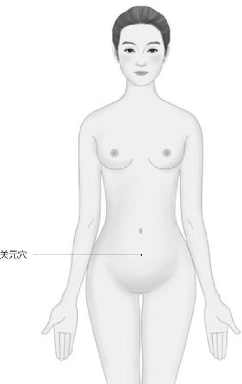
温暖它，不仅暖了小肠，也暖了你的心。
徐文兵：对，丹田就在关元穴处。元气、元精被关住的地方就是丹田。为什么叫“丹田”？丹田是火热的、火红的，相当于太上老君的炼丹炉，把孙悟空炼成火眼金睛的那个火炉。道家讲的内丹就是从丹田里炼出来的。
关元穴是小肠的募穴。“募”是汇集的意思，让关元穴一直保持温暖，热乎乎的话，那你的心就死不了。
丹田就在关元穴处。元气、元精被关住的地方就是丹田。相当于太上老君的炼丹炉，把孙悟空炼成火眼金睛的那个火炉。
梁冬：在冬天，我晚上睡觉的时候就在肚脐上箍一个小裤子，第二天早上起来感觉挺好。现在夏天我不这样弄，早上起来反而拉肚子。
徐文兵：其实在冬天，我们应该护住后腰，因为这一块儿有肾俞穴和命门穴。我们讲“冬暖脊背，夏暖肚”，在冬天，后脊梁最容易受凉。
梁冬：这是为什么？
徐文兵：因为阴气和阳气分布的不一样。冬天是后脊梁容易凉，夏天是腹部容易受凉。
“冬暖脊背，夏暖肚”。
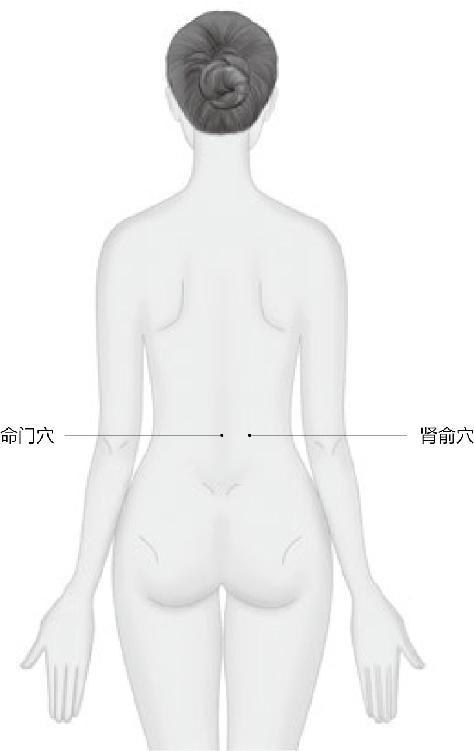
冬天守护好她们，你就能无往不利。
爱走神是什么毛病
梁冬：“逆夏气，则太阳不长，心气内洞”。什么叫做“心气内洞”？
“心气内洞”是什么？心漏气了，漏了。
徐文兵：我说了半天就是要提醒大家，一定要保证这个叫“太阳”的小肠的功能要正常，温度要足够合适，肠道蠕动要畅通。如果你伤了它，下一步邪气就往里走了，由表及里，小肠的里就是心，下一步就会伤到心。具体会把心伤成什么样呢？《黄帝内经》就说了——“心气内洞”。
我先问个问题——心有几窍？
梁冬：五窍，还是三窍？
徐文兵：我们说心有心房，左心房、右心房、左心室、右心室，它应该是有四个通道，这是从物理解剖学上来讨论的。以前纣王时候有个宰相叫比干，为人很聪明，最后被杀掉。纣王说：我要看看你的心到底是不是比别人多一窍，多开一窍。
正常的开窍是走血的，动脉血、静脉血通过那个窍道疏通过去，中间有片瓣膜。但是“心气内洞”说的是什么？心漏气了，漏了。脏是“藏精气而不泄也”；而心是藏神的，如果“藏精气而不泄”的心脏上出现了一个洞，人就出现什么问题？
如果心漏气了，人就会出现短暂的失神，或者这人眼神迷离、恍惚，没神了。
梁冬：老是走神。
徐文兵：失魂落魄，魂飞魄散，用老百姓的话讲，就是“这人丢魂了”。我们说这人怎么出现短暂的失神了，或者这人眼神迷离、恍惚，没神了。
梁冬：我一直以为这是精神方面的问题。
徐文兵：精神有物质基础，有能量基础。任何不良的情绪、情感、思想都是因为肉身出问题了。那肉身出问题的前提是什么？小肠出问题了。
有坏情绪、不良情感、思想，都是因为肉身出毛病了。
很多现代人得了颈肩综合症，肩膀、脖子这一块儿老是酸疼，这和他们长期伏案工作有关。但是大家忘了，如果你体内的小肠是寒的、不通的话，它照样会反映在经络上，也就是你的肩背，小肠经走过的经络就会出现问题。你在治体表的问题时，还得往肚子里面找原因。
梁冬：那怎么治呢？
徐文兵：小肠有两个代表穴，叫水分穴和关元穴。很多人在水分穴那儿有一个结，一动就“咯噔咯噔”地响，这时你一定要把它揉开了。中里巴人不是说过一个“推心置腹疗法”吗？把自己的手搓热了，揉自己的肚子。还有就是要经常温暖自己的肚子，要用艾灸去灸一下关元穴。
爱走神，老是失魂落魄，赶紧艾灸神阙，把神收回来。
梁冬：那吃东西的时候有什么需要注意的吗？
徐文兵：吃东西的话，特别是在夏天，人体开放，这时正是小肠开门“迎客”的时候，你把那些凉的东西灌进去。海鲜加冻啤酒，那小肠就承受不了。还有一点，大家一定要注意，物理温度和化学温度是不一样的。
梁冬：什么意思？
徐文兵：辣椒即使是冰镇的，它吃进肚子里，也是热的；牛奶即使煮开了喝，它也是凉的。因为在这个过程当中有个化学反应，会消耗你的阳气，带来的就是寒。消耗的阳气少，可能就是热。这就是我们平常应该注意的问题。
辣椒即使是冰镇的，它吃进肚子里，也是热的；牛奶即使煮开了喝，它也是凉的。
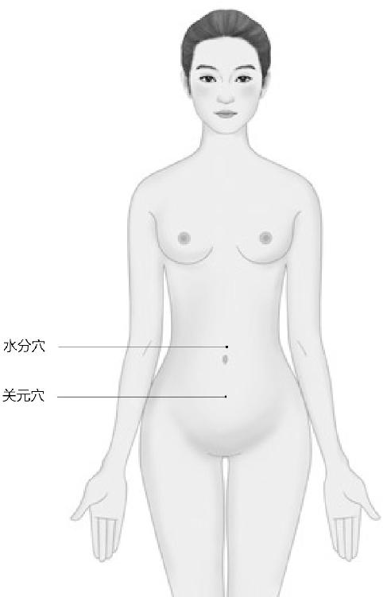
小肠的两大护法。
另外，患有颈肩综合症的人要注意去看看自己的小鱼际有没有发青、发黑。有一年，我有一个好朋友，大春天没有“广步于庭”，刚立春，她就早早地跑到颐和园去踏青。结果那草还没有发芽，青没踏成，倒让青把她给“踏”住了——受寒了，冻得脚疼，不听使唤。回来后不停地跑厕所，结果还拉不出东西来。这就说明她在泄寒气，不是拉有形的东西。
但还是不行，她还是脚疼。后来我给她一号脉，手冰凉的。再看一眼她的小鱼际，乌青乌青的。一扎针，放了血，挤出来几滴黑血，然后我又在她的水分穴上扎针，她出了一身冷汗，身上一下就热乎过来了，这样才把她受的寒气给驱散。所以，我们一定要保护自己的“太阳”，不要让它被阴寒的东西给蒙蔽了。
另外，小肠出现问题以后，如果不治疗的话，它就会往里面发展，变成“伤心”，出现“心气内洞”的症状。什么意思？本来我们的心把自己的神藏得很好，包裹得很严实。结果它出现了窟窿，暴露了，被人“洞见”了，这样就“洞见意识底层”了。心“暴露”以后有什么症状呢？比如说，很多人就听到别人的声音了。
梁冬：这是心“暴露”以后才有反应的吗？
徐文兵：对，出神了。很多人则是特别敏感，你站在十几米以外的地方，正常人都听不见，不知道你在说什么，他却听得一清二楚。这些人都是出神，漏神了。还有的人能看到别人看不到的东西，或者是出现了幻听、幻视。这都是“心气内洞”的表现。
你站在十几米以外的地方，正常人都听不见，不知道你在说什么，他却听得一清二楚。这些人都是出神，漏神了。还有的人能看到别人看不到的东西，或者是出现了幻听、幻视。
症状稍微轻一点就是，你往那儿一躺，外边不能有一点声音，即使是卫生间里的水“嘀嗒”作响，或者是闹钟指针“嘀嘀嗒嗒”地走，对他都有影响。问题在哪儿？不是那些东西发出的噪音大。你要说外边有人拿着冲击钻在那儿装修，让你睡不着，这可以理解，你把心藏得再好也会受影响。但是如果外边的声音是可以被忽略不计的，你却听见了，说明什么？神出来了。
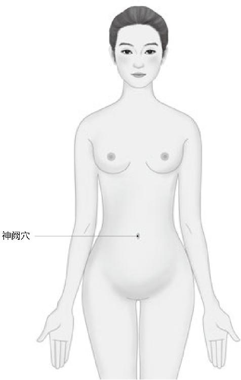
心神进出的“宫门”。
梁冬：那怎么把它收回来呢？
徐文兵：中医里有几个穴位都跟神有关，肚脐那儿叫神阙穴。“阙”是什么意思？天安门有五扇门，中间那个大门洞有两扇门，每扇门各有八十一颗大门钉，一共一百六十二颗门钉。《黄帝内经》有两部，每部各有八十一篇，两部共有一百六十二篇。
梁冬：每个数字都是有意义的？
徐文兵：中间那扇门是供皇帝出入的，叫“阙”，就是一个大门，两扇门，而且它的位置在正中央。神阙穴正好在我们腹部的正中线上，它也是一扇“大门”。供谁出入呢？皇帝。在咱们的身体里，谁是“皇帝”？心！心为君主之官，心藏神，它和神是君主。所以，神阙是我们身体里的“皇帝”出入的地方。很多人心气内洞，神就从神阙那儿跑出去了，如果你赶紧艾灸神阙，就能把它封固住。
“阙”就是一个大门，它的位置在正中央，神阙是我们身体里的“皇帝”出入的地方。
在我们的身上还有一处出神的地方，也就是我们的神门穴。神门那扇“门”要比神阙小一点。很多人容易出神就是因为他的“小门”没关严。所以，在平时你要把它给关好了。
还有，睡不着的时候，你也别数羊了。你越数，思维就越活跃，是数到999了，还是997了？你会不断在那儿反省。这个时候，你就应该去按自己的神门穴。
很多人觉得心跳加快，就形容说“哎哟，我一着急，心都提到嗓子眼儿了”。其实是神出来了。“小鹿乱蹦”也是动心、动神了的一种表现。
神门穴就在小拇指侧，第一腕横纹的尺动脉搏动的地方。这些都相当于是身体的门阙，是开口的地方。还有些人的身体上本来不应该开口的地方开口了。这些叫什么？叫神封、神藏。在胸骨正中的膻中穴的旁边，有神封、灵墟和神藏，这几个穴位也是藏神的地方。很多人觉得心跳加快，就形容说“哎哟，我一着急，心都提到嗓子眼儿了”。那是一种什么样的感觉？
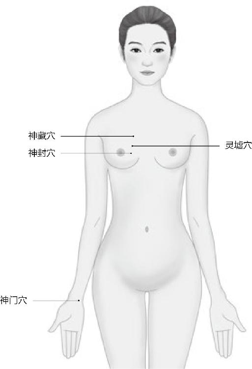
身体容易漏“神”的地方，切记要保护好自己，不要让自己伤神伤心。
梁冬：就是心出来了。
徐文兵：其实是神出来了。还有人觉得心头“小鹿乱蹦”。正常人有心跳，但你感觉不到心在跳动。等你感觉到心跳了，那就是一种特殊的状态，动心了、动神了。所以很多人就觉得两侧的肋骨间隙都有该封、该藏的地方，他会觉得这儿心跳，甚至疼痛。如果你出现了这些症状，那就需要找医生去调理，把敞开的心扉给合上。
另外，我建议大家在平时要做到“见人且说三分话，不可全抛一片心”。
梁冬：免得受伤？
徐文兵：对。你早早地把自己的心神抛出去了。如果你碰到好人还行。
梁冬：万一碰到坏人呢？
徐文兵：他接不住。“农夫和蛇”的故事大家都知道，农夫被蛇咬了，怨谁？不怨蛇。蛇好好的在那儿冬眠，你把人家给捂热了，它不咬你才怪。我发现很多人伤神是因为他暴露了自己的内心，在不恰当的时机暴露给了不恰当的人，最后被人伤害。
很多人伤神是因为他暴露了自己的内心，在不恰当的时机暴露给了不恰当的人，最后被人伤害。
徐文兵： “心气内洞”的现象有很多，拉肚子，中国人也叫“洞泄”，就是说身体上有个洞，“哗哗哗”地往外漏东西。心气如果老这么漏的话，手掌上的劳宫穴也会有症状（手厥阴心包经的第八个穴位叫“劳宫穴”）。你会觉得手心这儿直往外冒热气，就会没有心情，没有欲望去做其他事情。为什么？因为心气都漏掉了。所以，这些人应该去补心气。
“心气内洞”的现象：拉肚子，手心往外冒热气，没有心情，没有欲望去做其他事情。
梁冬：怎么补？
徐文兵：把“洞”给粘住啊。中医用的补药都是止损的，就相当于股票跌了，你赶紧抛，不是增益。我们现在都把“补”理解成“益”的意思，其实补漏洞是要先把窟窿堵上。
中医用的补药都是止损的，就相当于股票跌了，你赶紧抛，不是增益。
“心气内洞”的人有个外在表现。就像我问“心在哪儿”，你说“看不见”，但我告诉你，中医总是能够把一些无形的东西落实在有形的物质上。比如说心，它在外面的表现是什么？“舌为心之苗”。有一颗破碎之心的人，舌头上往往布满了小裂纹，沟壑纵横。所以一看舌头，我就知道你谈了三场恋爱，其中第二场伤得比较深。有人会说：“哇，你怎么知道的？”舌头告诉我的。
有一颗破碎的心的人，舌头上往往布满了小裂纹，沟壑纵横。
梁冬：就是裂痕比较深？
徐文兵：对。
梁冬：所以，接吻是一件很撩动心神的事情。
徐文兵：而且还是法式接吻，要动舌头的。
对于病人，我们一般会观察舌头，然后根据症状来用一些补药。我推荐几味补药，最好的就是阿胶。
胶类的东西都有非常好的滋补作用。像中医讲的鱼膘胶、黄明胶、用驴皮熬的阿胶，还有龟板胶、鹿角胶等等，都是血肉有情之品。它们有个特点，就是能把心和血脉里边的窟窿给补上。
补住后，然后你才能往里面加东西，真正的补品是这个意思。另外，阿胶本身也加了一些其他的中药，效果比较好。如果我们吃不起这些补品的话，怎么办？“精神内守，独立守神”，什么叫“独立守神”？就是把你那些漏掉的精、气、神给收回来，自己学会安静。没事在那儿站着，而且是“金鸡独立式”地站着。
补住漏洞后，才能往里面加东西，真正的补品是这个意思。
梁冬：我们在上小学的时候，部分同学不是很听话，老师就让他们面壁，站墙角，其实现在想起来，这些还真不是惩罚。
“独立守神”也是一种补品。
徐文兵：是惩罚，但它有特殊的作用。“面壁十年图破壁”，真正能一个人静静地站一会儿的人，是很少的。
梁冬：所以大家以后在等班车、等公共汽车、等地铁的时候，可以抓紧时间“独立守神”。
徐文兵：前两天，我去听一个音乐会，就感受到那是一个特别能让人聚精会神的地方。从指挥家和乐手之间的“应”，我想到了一个字，就是“此春气之应，养生之道也”“此夏气之应，养长之道也”的那个“应”，具体说来，就是指挥家的手一挥，“哗”一声，音乐就来了；乐手一抬胳膊，姿势也到位了。我在二楼，观赏的效果特别好。当时我就感觉小泽征尔在那儿一站，简直就是在练一场气功，而且把底下的人也带动得特别好。他两腿微屈，与肩同宽，往那儿一站，然后在那儿指挥，这简直就是在打太极拳。
梁冬：“药”字的繁体字“药”下面是一个“乐”的繁体字“乐”，所以，音乐是疗愈灵魂最好的“药”。
徐文兵：对，它能通神。
音乐是疗愈灵魂最好的“药”。
梁冬：所以，如果大家实在“洞”得厉害的话，可以听一听平和的音乐。
徐文兵：对，中医对音乐也有讲究。角、徵、宫、商、羽，它们都入五脏，而且它们形成音乐后能产生治疗的效果。比如说我们在吃饭的时候，就奏宫调；打仗对应的是金，而跟金对应的是肺。所以你越学中医，就越会觉得古代的人太伟大了，他们把这些东西研究得太透了。
什么叫“拨动人的心弦”？演奏者在某个时间奏出来的调把你的心给打动了，就是那种感觉。现在的人都想用语言去治疗，我说语言是最没用的。两个人谈恋爱，谈到“咱俩坐下来谈谈”的时候，那这两人就完蛋了。我觉得最能通神，最能打动人的多半是一种无言的交流，举手投足间的一个眼神。
最能打动人的多半是一种无言的交流，举手投足间的一个眼神，最能通神。
秋天不收，肺会受伤
徐文兵：到了秋天，如果你不收敛的话，体内的津液就不够了，就会出现皮肤滋润度不够、毛发脱落等一系列焦的症状。
阴和阳就相当于一枚硬币的两面。白天我们叫“神”，晚上就叫“魂”了，其实它们是同一种事物的两种不同状态、表现形式。
梁冬：就应了“逆秋气，则太阴不收，肺气焦满”这句话。
徐文兵：春天是少阳。到了夏天叫“太阳”，可一到秋天，《黄帝内经》就说阴了。
梁冬：“阴”和“阳”到底怎么区分呢？
徐文兵：阴和阳就相当于一枚硬币的两面。白天我们叫“神”，晚上就叫“魂”了，其实它们是同一种事物的两种不同状态、表现形式。
梁冬：那秋天应该吃啥呢？
秋天要收收心，收收神，不要再去努力干活了，否则的话就叫“愁”。
徐文兵：秋天要吃酸，水果下来了，我们就要多吃点水果来补充一下体内的津液。因为秋天秋高气爽，容易干燥，我们要适当进补，以增加皮下的脂肪。
另外在秋天，我们就不要再去努力干活了，否则的话就叫“愁”，明知不可为而为之。在秋天气不够的时候，人就会产生一种悲的情绪。如果你逆着秋天的收敛、养收之道去干，不去收收心，收收神，回回神的话，你就伤到了你的更深处，而且这都不是伤大肠了，伤的是太阴。
“太阴”手太阴肺经。
“太阴”是谁？手太阴肺经。肺有个头衔，叫“手太阴肺”。为什么称它叫“手”呢？因为肺经是从胸口出来，经过中府、云门，然后到太渊、鱼际，最后到少商，共十一个穴，这条经络行走在我们的手臂上，所以叫“手太阴”。
那为什么叫“太阴”呢？肺是一个吸纳、容纳清气的器官，所以它叫阴。而且阴也分左、中、右，有太阴，中间有厥阴，最热最不像阴的叫“少阴”。手太阴是肺；手厥阴最凉，满是清凉之气、肃杀之气，就是心包。
最热最不像阴的叫“少阴”；手厥阴最凉，满是清凉之气，肃杀之气，就是心包。
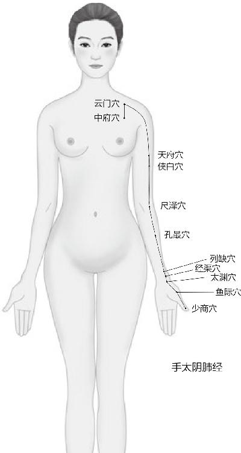
秋天不要太拼命，要懂得收收心，收收神，否则伤的是太阴。
女人中的男人相当于是手少阴心经，也就是我们跳动的心。所以到了秋天，如果你不收敛的话，肺气就不能很好地肃降，你也不能在肺气的推动下产生足够的津液。我们说金生水，水在这里是指肾水，它们之间是母子关系。所以到这会儿，你吸不进去就会出现“肺气焦满”的症状。那“焦”是什么？
秋天肺气不收的话，就会出现一系列焦的症状。比如说皮肤黝黑，毛发脱落，还有就是你体内的津液不够了，皮肤滋润度不够了。
梁冬：焦是干燥。
徐文兵：对，而且是那种脆，不滋润。所以这时候，如果你肺气不收的话，就会出现一系列焦的症状。比如说皮肤黝黑，毛发脱落，还有就是你体内的津液不够了，皮肤滋润度不够了。这就是我们在秋天应该注意的问题。
徐文兵：肺对应的外面的腑叫阳明，手阳明大肠经。很多与肺有关的疾病，首先表现出来的不是咳喘，而是大便有问题。要么就是大便收不住，老是拉肚子；要么就是大便干燥得排不出来。就像河道里没水的时候，船走不了一样，这就是因为没有水的滋润。这时候它就直接伤到了肺，导致“肺气焦满”。说到“肺气焦满”的表现，那肺开窍于哪儿？
肺对应的外面的腑叫阳明，手阳明大肠经。很多与肺有关的疾病，首先表现出来的不是咳喘，而是大便有问题。
梁冬：肺开窍于鼻。
徐文兵：所以，肺气焦的第一个表现就是鼻子干燥，稍微一碰就出血。
大便收不住，老是拉肚子；或者大便干燥得排不出来，要赶紧润肺。
梁冬：那花粉症和鼻炎是不是都因为肺气焦引起的？
徐文兵：这是两回事儿。花粉症是什么？春天里那股代表了热情洋溢气息的花粉，把你在秋天里着的凉给勾出来了。所以花粉是“因”，你本身充满的寒痰是“缘”，它们两个一结合，人就喷嚏连连。有的人是不打喷嚏，但是鼻子“吧嗒吧嗒”地直流鼻水。
肺气焦的表现：鼻子干燥，稍微一碰就出血。
梁冬：其实应该让它流完。
徐文兵：流完就好了。
梁冬：但很多人老是把它压回去，明年再发一遍。
徐文兵：花粉症在日本非常流行，在美国也有。中国人一般移民到美国，两年后基本就得花粉症了。为什么他原来不得？难道美国的花粉跟中国的花粉不一样？一样的。日本花粉主要的来源就是水杉，杉树是活化石嘛。咱们北京那个植物园，樱桃沟里面那条沟里种了很多水杉树。有一次，我带一些日本朋友去植物园玩，他们指着水杉树说“这是我的敌人”。我说扯不扯，大自然生长的东西凭什么就是你的敌人？
花粉症和鼻炎是两回事儿。花粉症是春天里那股代表了热情洋溢气息的花粉，把你在秋天里着的凉给勾出来了。所以花粉是“因”，你本身充满的寒痰是“缘”，它们两个一结合，人就喷嚏连连。
得花粉症的人有时候也泡泡温泉，但那是杯水车薪，根本解决不了问题。一到春天，阳气生发，内部阳气一推动，外部再加上阳气的呼应，这就把体内的寒气给引出来了。其实打喷嚏，那就让它打吧，打几千几万个，说不定你的花粉症就好了。但是，有些人又受不了自己老打喷嚏。
然后就开始用抗过敏药把喷嚏给压回去。这其实就相当于把你的阳气给憋回去。不让它把这些外邪，“敌人”驱赶出去。吃过敏药以后，结果很多人就出现一种副作用——开车打瞌睡。其实这哪是它的副作用呀，这恰恰是正作用的表现。一个人的阳气被抑制住了，他当然就会想睡觉了。所以，我认为他们这种治疗方法是不对的。
那怎么治疗花粉症呢？首先，你不要“形寒饮冷”，不要去吃那些冰冷的，寒性的东西，这样很容易伤肺；第二，“病痰饮者，当以温药和之”，花粉症患者一定要用一些温热的药，特别是那些能扶阳的药，比如说附子、吴茱萸、细辛等，把体内阴寒的东西化掉，这样你体内那些阴寒的东西不仅变不成害，而且还能化害为利，变成你身体所需的营养物质和能量。
梁冬：可以吗？
徐文兵：当然可以。吐出来的痰也是你的精呀，所以老吐痰会伤精。另外，老流鼻涕为什么会导致记忆力下降？因为脑漏了，漏的也是你的精嘛。
老吐痰会伤精，老流鼻涕会导致记忆力下降。
梁冬：怪不得我感觉最近这两天有点沮丧，肯定是前两天流鼻涕流多了的缘故。
徐文兵：“肺气焦满”表现出来的症状就是鼻子干燥。有些人的鼻子变得干燥了以后，闻不见香臭，干脆什么味儿也闻不到了，很痛苦。饭菜做得再好吃，也没福享受。我们说，美味佳肴有几大特点——色香味俱全。味包括两层意思，一是气味，一是滋味。气味是靠鼻子闻的。
“肺气焦满”以后，人生会少了很多的乐趣。用老百姓的话讲，叫“鼻子聋了”。
梁冬：鼻子也不是被堵塞了，它就是闻不到气味。
徐文兵：所以，“肺气焦满”不是说鼻子被堵住了，它就是鼻子干。有些人还经常蘸点水到里边去润一润。
“肺气焦满”以后，就好像舌头上没有唾液一样，人就失去了味觉，闻不到任何味道，这就使人生少了很多的乐趣。用老百姓的话讲，叫“鼻子聋了”。为什么这样叫？因为在中国字里，闻香臭的“闻”和听声音的那个“闻”是一个字，耳朵聋了，闻不到声，叫聋了；鼻子干了，闻不到味儿就叫鼻子聋了。
所以治疗这种病的时候，你一定要去滋润你的肺。这时候，你就应该用枇杷、梨，特别是梨，再蒸点贝母吃，让鼻子变得湿润起来。一旦鼻子里变得湿润了以后，那些嗅觉细胞又活跃了，甚至鼻子里的小鼻毛又长出来了。鼻子本身就有加温、过滤空气的作用。你如果把它伤了，那所有的灰尘、细菌、病毒就一下子全呛到你的气管、支气管，甚至是肺泡里，那肺就受不了了。
闻香臭的“闻”和听声音的那个“闻”是一个字。
梁冬：所以，不要随便剪鼻毛。
不要随便剪鼻毛，除非它龇出来了你再剪它。
徐文兵：除非它长出来了你再剪它。另外，你还可以经常按摩一下鼻翼两侧的迎香穴。鼻子聋了，闻不着味了，你揉揉它，哎，能闻着了。我有几个患者就是通过扎针吃药，把他们的肺经给滋润了，肺气通了以后，他们就开始闻到味儿了。慢慢地，香辣、有强烈刺激性的味儿也能闻到了，最后他们的味觉恢复正常了。
“太阴不收”的表现，一个是焦，一个是满。如果体内藏着那些浊气不放的话，那就变成了满，就是哮和喘。
梁冬：“逆秋气，则太阴不收”这句话怎么理解？
徐文兵：“太阴不收”的表现，一个是焦，一个是满。我们讲，五脏是藏精气而不泄的。如果你体内藏着那些浊气不放的话，那就变成了满。这种满表现出来，就是在非典时候出现的那些症状。好多人死的原因是什么？肺泡里面积满了痰液。最后，他的呼吸——氧气交换功能就被隔绝、阻断了，就好像一把鼻涕一把泪地把人的呼吸道给堵住了。这时候的“满”表现出现就是哮和喘。什么叫“哮”？就是空气进入到气道时被这些东西堵住了。
什么叫“哮”？就是空气进入到气道时被这些东西堵住了。
会吹口哨的人都知道，手指一撮，嘴唇一撅，把气道给堵住了，就能发出那种“哮”的声音。所以很多人的哮喘先是有“哮”，他呼气和进气的时候都会打鸣，产生一种哮鸣音。有的人是睡觉打呼噜的时候产生这种声音，其实这是“痰阻气道”，叫“肺满”了。
还有一种情况，就是现在一些粉尘的污染。比如在石棉矿工作的人，吸入过多的粉尘，最后就得硅肺病。严重者会影响到肺功能，丧失劳动能力，甚至发展为肺心病、心衰及呼吸衰竭。有些矿工吐出来的痰都是黑的。
现在医院老做一些不恰当的所谓超声雾化吸入，人吸入一些分子过大的东西，也会伤害到肺。前段时间去世的那个演沙僧的老演员闫先生，最后就是肺纤维化去世了。我看了一下报道，当年他在某个剧组拍戏，当时蚊蝇特别多，结果他们就打那个灭蚊蝇的六六粉。打了后，大家关好门窗出去避难去了。但老先生鼻子闻不见味，就在屋子里头呆了一晚上，结果从那落下病根了。先是闻不到，鼻子出问题，然后伤到肺。
梁冬：真是理论联系实际呀！
徐文兵：我整天都在观察分析，然后联系到我们的中医理论，越来越觉得中医是有先见之明的。
梁冬：前面讲到“满”这个词，我们就会想到哮喘，因为有痰在肺里面。
徐文兵：什么叫“喘”，就是呼吸加急了，原来的频率是吸一口气，呼一口气，现在频率不得不加快了。哮喘有一个症状就叫张口抬肩。有时候，肺的呼吸能力变弱了，不得不通过抬肩膀来加重肋骨的压迫感，让它去一呼一吸，这就说明肺功能很差了。有的人还会得“肺不张”，就是说肺那种绵长、柔软的呼吸功能干脆就丧失了。
什么叫“喘”，就是呼吸加急了，原来的频率是吸一口气，呼一口气，现在频率不得不加快了。哮喘有一个症状就叫张口抬肩。
怎么办呢？我的治疗方法就是，让患者把他体内的痰浊、瘀血慢慢地咳出来，一点一点往外排。很多人都知道，感觉到体内有痰的时候，抽口烟，“喀喀喀”地就咳出来了，这是个恶治法。因为抽烟本身就在抽浊气，然后以毒攻毒，把体内的痰排出来。这个方法从投入和产出比来讲，不大合算。
中医里专门有一些宣肺化痰的药。吃了这些药，能鼓舞你的肺气，让你把深处的一些浓痰、积液给咳出来。据有的患者形容，刚开始咳出来的痰都成块了，而且是灰黑色的。有的人形容说，跟面疙瘩一样。
咳出来的痰是什么样？那就要看他的“肺满”到什么程度了。你说，这些浓痰堵在气管或者是呼吸道里，我们会有多难受呀？吃了宣肺化痰的中药后，慢慢地，那些成块的痰就变成清稀的痰涎了，这就说明痰的流动性变强了，更容易被排出了。最后，清稀的痰涎由灰黑色变成绿色，然后慢慢变成白色，到最后变成了黄色。
黄色说明什么？说明你肺里的废气排空了。等到黄痰一咳完，肺里边“满”的症状就减轻了。这时候，你就会觉得呼吸都省劲了。原来得大口地吸一口气，才能吸进去，现在微微地一呼吸，气就能渗进去，甚至能渗到深处。
道家讲究“踵息”，一口气一吸吸到脚后跟了，说明这个人的气脉是常通的。那些气脉不通的人，就剩一口气，在嗓子眼这儿捯气，眼看气若游丝的，最后还是咽气了。
道家讲究“踵息”，一口气一吸吸到脚后跟了，说明这个人的气脉是常通的。那些气脉不通的人，就剩一口气，在嗓子眼这儿捯气，眼看气若游丝的，最后还是咽气了。健康的人，他的呼吸是很深的，很通畅的。
所以，你把“焦”的症状给滋润了，把“满”的邪气，肺里不该有的东西给排空了，这时候肺和大肠的问题就解决了。
梁冬：说到把肺里的邪气、不该有的东西排出来，那除了吃些中药，在日常生活中，我们还有什么解决办法呢？
徐文兵：第一，我们不要制造这种邪气、浓痰。这些邪气从哪儿来？肺的“妈妈”是谁？土生金，是脾胃。
我们经常说脾胃是生痰之源，肺为贮痰之器，就是它们生产出来的，全把肺当成是痰盂放进去了。所以要切断源头，从饮食上去找原因。首先，你不要吃那些容易生痰的东西，“鱼生火，肉生痰，萝卜青菜保平安”。别吃那些容易导致营养过剩的东西。
不要把你的肺当成是痰盂，生痰的源头是脾胃。
另外，我们要帮助肺来宣肺。什么叫“宣肺”？举几个例子。我们经常吃的桔梗——韩国现在保留的那种泡菜，就是一个非常好的宣肺利痰的东西，如果你咳咳咳老觉得那口痰咳不出来，吃些桔梗很容易就能排出来。
桔梗——韩国的泡菜、新会的陈皮、皂荚、皂角刺都能化痰。
生活中，我们还有一些非常好的化痰药。比如说陈皮，广东新会的陈皮效果最好。放的时间越长越香，有这种香味的东西，一般都有宣散的作用。还有，南方皂角树上当肥皂用的皂荚，以及皂角刺等，都有非常好的宣肺化痰的作用。
此外，很多家庭都用干燥丝瓜的瓤子，洗锅碗的时候，去油腻的效果特别好。殊不知，那也是一种非常好的化痰药。
干燥丝瓜的瓤子煮水喝能化痰。
梁冬：怎么用呢？
徐文兵：煮水喝。胡因梦老师办身心灵班，招学员的时候，她就说：“洗澡要用丝瓜络去洗。”因为它本身是味药，有通筋活络的作用。其实，这跟中医的道理是相通的。
很多人患有脂肪瘤，身上疙里疙瘩地长了好多脂肪瘤。碰到这样的患者，我就建议他们用丝瓜瓤去泡澡、搓澡，然后用丝瓜瓤煮水配合其他一些化痰的药内服，这些人脂肪瘤慢慢就变小了。有的人甚至一摸，脂肪瘤没了。
身上疙里疙瘩地长了好多脂肪瘤，用丝瓜瓤去泡澡、搓澡，然后用丝瓜瓤煮水，再配合其他一些化痰的药内服，脂肪瘤就会慢慢变小了。
梁冬：新会陈皮是最好的？
徐文兵：新会的陈皮是中医里非常有名的药，只不过太贵，一般人用不到。我们一般人是把吃剩的橘子皮放在暖气片上烤干了，泡茶喝。
梁冬：为什么新会的陈皮就特别好？
徐文兵：一方水土养一方人，也养一方植物啊。
梁冬：所以这个药材还是要道地药材。
徐文兵：地道药材，道地药材！
冬天不藏，直接伤肾
梁冬：接下来，我们来讲讲“逆冬气，则少阴不藏，肾气独沉”。
“少阴”是足少阴肾，还有一个是手少阴心。
徐文兵：“肾气独沉”是一个版本的说法。我们学的最古的那个版本是“肾气浊沉”。这里面有一个概念，就是“少阴”是谁？
梁冬：足少阴肾。
徐文兵：还有一个是手少阴心。
梁冬：膀胱和肾是互为表里的。
徐文兵：足太阳膀胱和足少阴肾，这两个都是火热的性格，只不过一个是男人中的男人，一个是女人中的男人；一个是腑里面最热的，一个是脏里面最热的。到了冬天，如果你不好好闭藏自己的话，会直接伤肾，而不是伤膀胱、伤前列腺。
《黄帝内经》里没写前列腺，它把前列腺归在膀胱里面，归膀胱统辖，所以治前列腺的病，都是去治膀胱。但它这儿说的是伤到少阴，直接把少阴肾给伤到了。伤到以后出现了什么结果呢？
梁冬：“肾气浊沉”。
徐文兵：那什么叫“肾气浊沉”？肾是藏精的，同时它很热，它能把阴寒的精化成气，然后这股气沿着任、督脉往上走，化成了神，这是肾的作用。如果你把足少阴肾给伤了，让它着凉了。结果是精不化成气了，反而会变成残浊败絮漏掉，表现出来就是遗精、遗尿、尿中有蛋白等问题，有的人甚至还会出现大便中带血的现象。精就变成浊物给流掉了，沉下去了。
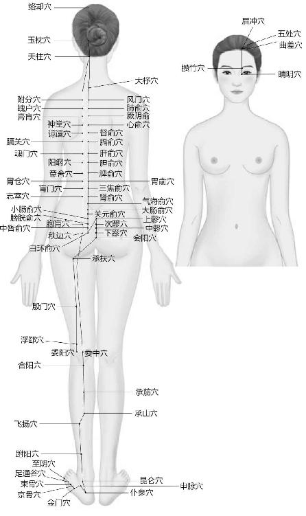
足太阳膀胱经
冬天要想不漏“精”，就要闭藏它们，也藏住自己的心。
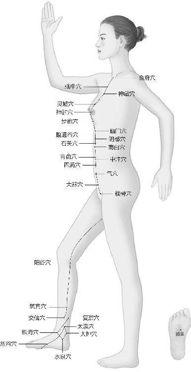
足少阴肾经
肾就像仓库里看门的，主封藏、闭藏。这个人精力旺盛的时候，谁也别想偷我家的东西。但它如果在冬天被伤到以后，门户大开直接漏的不是神，而是精。
肾就像仓库里看门的，主封藏、闭藏。冬天人被伤到以后，门户大开，直接漏的不是神，而是精。漏精的表现：1、遗精、遗尿、大便中带血；2、小便的时候有很多泡泡。
精属阴，我们称之为“阴精”，它不是往上走的，魂飞魄散才是往上走的，那是神飞走了，而精是往下漏的。
梁冬：有些朋友说小便的时候有很多泡泡，这是因为尿里含的蛋白质太多？
徐文兵：也许他经过化验，发现尿里没有任何蛋白质。但是中医会看得更精微、细致。我们在前面反复讲过，漏精有很多表现。如果精没有变成气化走的话，它就变成了没用的东西，甚至变成了致病的因素。我们经常说东西好不好，要分时间、地点、场合。
比如说金子，很贵吧？即使是掉下来一片金屑，就是碎屑，也很贵。“金屑虽贵，落目成翳”这句话的意思是说，你把那么贵的金子掉在眼睛里，最后你的眼睛磨出来个大泡，那也不好。再好的东西，如果它不被人很好地利用，最后反而会变成伤害自己的东西，所以有的女人会长子宫肌瘤。子宫内膜本来是准备好了为受精卵着床、培育胎儿所需的营养物质用的。如果它受到伤害，没有变成经血及时排出，它就在那儿变成了有形的东西，长出肿块、肿瘤来。
再好的东西，如果它不被人很好地利用，最后反而会变成伤害自己的东西。
徐文兵：补肾的话，有入肾的药。中医讲中药有寒、热、温、凉之分，这讲的是药性。另外，中药还分五味——酸、苦、甘、辛、咸，这是讲它的气味或者滋味。最后，中药还能归经。意思就是说，不同的物质会影响人的不同脏腑。
中药有寒、热、温、凉之分，这讲的是药性。中药还分五味——酸、苦、甘、辛、咸，这是讲它的气味或者滋味。
老百姓有句话叫“葱辣鼻子蒜辣心，芥末辣得鬼抽筋”。这三种物质都是辛辣的，但它们归的经不一样。切葱的时候，鼻涕、眼泪直流；吃瓣蒜，烧心；吃芥末则会浑身抽搐。症状不一样，是因为它们归的经不一样。
中医里边有很多入肾经的药。我刚才讲补心是用阿胶，因为它入心经。入肾经的药，举个例子，今儿个来位病人，进来就对我说：“你上次说的益智仁，治疗小儿遗尿，男孩子遗精，效果挺好。”
益智仁是味非常好的补肾药，还有我们经常用的杜仲、续断、补骨脂以及骨碎补，这些都是补肾的药。
非常好的补肾药：益智仁、杜仲、续断、补骨脂、骨碎补，这些都是尝百草的神农氏发现的。
梁冬：这些药是谁发现的？
徐文兵：尝百草的神农氏。神农氏其实不是指一个人，所谓的“氏”它说明是一个团队，是个家族。所以，神农氏这些比黄帝出生还早的人，就用自己的身体去感知、感受这些植物。
说回“少阴不藏，肾气浊沉”。在冬天，我们本来是应该把肾精、肾气闭藏起来的，如果你去开泄，比如说去冬泳，去跟自然作斗争，去出汗，就违反了冬天的养藏之道。要知道，出汗、开泄本来是夏天应该做的事情。
我们讲冬天要“无泄皮肤，若伏若匿，若有私意”，要爱惜自己。替自己着想，需要闭藏，更要注意保暖，这都是冬天的养藏之道。你反着去做，伤肾很快。
在冬天，本来是应该把肾精、肾气闭藏起来的，如果你去开泄，比如说去冬泳，去跟自然作斗争，去出汗，就违反了冬天的养藏之道，伤肾很快。
很多人为什么漏精？其实是他在冬天没有闭藏好。我治过一些这样的病人，稍微听到点声音，受到惊吓，就屁滚尿流，尿裤子，这也是因为惊恐伤了肾精和肾气了。怎么办？利用下一个冬天天地收藏的时候去调治，跟着大自然去藏一藏。
冬天是进补的季节，意思就是说冬天是补肾的季节。
梁冬：传说中牛鞭、虎鞭补肾，效果到底怎样？
徐文兵：很多人说的补肾药其实是催欲剂。催欲，本来是没有性欲的人硬是被撩拨起来了。没有性欲其实是一种自我保护的行为，阳痿和没有性欲、性冷淡是人的一个阶段，因为我透支多了，现在要歇会儿。但这帮人还不歇，还要吃壮阳药、春药。实际上壮阳药都叫春药。什么意思？撩拨起来，把你逗起来，这是在过度摧残自己。
没有性欲、阳痿、性冷淡其实是一种自我保护的行为，因为我透支多了，现在要歇会儿。
梁冬：都是短期行为。
徐文兵：所以他们这些人吃的牛鞭、虎鞭、鹿鞭都是入肝的，最容易生火。它们都叫宗筋，不是补肾而是补筋的。吃完以后，先补肝木，原本姿色平平的人，他也觉得漂亮了；原来对这个人没有兴趣，他突然变得有兴趣了。这其实是把心火撩拨起来了。最后心火再反侮，把自个儿那点藏起来，打算留着以后用的肾精再射出去，早早地用完了，这就是所谓的“速死之道”。
实际上壮阳药都叫春药。什么意思？把你逗起来，这是在过度摧残自己，都是短期行为。
梁冬：所以，像美国现在的经济叫需求不强。
徐文兵：打强心针、壮阳剂。
梁冬：注入流动性。
徐文兵：然后就会出现暂时的繁荣，好像触底反弹了，经济恢复了。那些通过吃壮阳药来使自己勃起的人，以后会病得更深，用任何药也没用了。
牛鞭、虎鞭、鹿鞭都是入肝的，最容易生火。
梁冬：很多人都认为，现在的美国通过刺激流动性，大量注入流动性资金的做法来刺激经济，是经济开始见底反弹了，显然不是。
徐文兵：显然是一阵虚火。
梁冬：这就是明道以后，你即使不懂经济，也可以看到其中存在的问题。
徐文兵：所以中国古人讲的是培养通才，一通百通。他们是站在一种哲学或者是玄学的高度来看问题，有预见性，因为他们看清了推动事物背后发生、发展的那股力量，而不是拿给我看有形、有状、有像的东西。
中国古人讲的是培养通才，一通百通。他们是站在一种哲学或者是玄学的高度来看问题，有预见性，因为他们看清了推动事物背后发生、发展的那股力量，而不是拿给我看有形、有状、有像的东西。
冬天进补的话，我们说一定要先把自己的肾精给补住，不让它漏了。这样才能养精蓄锐，以待来年开春用。其实真正的补肾药是偏凉的，比如说生地黄，是黑色的，还是味止血药，它还有另外一个名字——地髓。
梁冬：大地的骨髓？
徐文兵：你想想，这味药厉害不厉害？所以，我们可以用生地把那些肾精漏得太厉害的人给补上。
梁冬：那有一味叫“淫羊藿”的是什么药？
徐文兵：淫羊藿是催欲剂，它是补肝的药。为什么叫“淫羊藿”？就是羊吃完这种草以后会不停地交配。古代也有拿动物做试验的，一看这药这么厉害，那给人吃点，人也起性。
梁冬：有一年我在新疆，当地的官员请我们吃饭，点了一种用淫羊藿泡的酒。当时我年轻力壮，喝一杯之后，不光是鼻子出血，真的是整个人弹起来了。
还有，我们刚才讲到了“肾气浊沉”。除了淫羊藿之外，很多人都觉得，还有一些药也是补肾的，比如说枸杞、肉苁蓉。
徐文兵：我告诉你，枸杞子绝对不是补肾的药，它也是催欲的药。你看，它的颜色是红的。以前有句俗话，叫“离家千里，不服枸杞”。为什么？意思是老婆不在身边，孤身一人远行，不能吃枸杞。吃完枸杞就会像喝完用淫羊藿泡的酒一样，心潮澎湃，生机发动。
枸杞子绝对不是补肾的药，它也是催欲的药。以前有句俗话，叫“离家千里，不服枸杞”。
枸杞在治疗一些比如说性冷淡、手脚冰凉的症状时可以用。但作为补肾的药，它不能用。其实，植物也是一个矛盾体。枸杞是温热的，催欲的。但是枸杞树的根皮——地骨皮，却是一味非常好的补肾药。它也是凉性的。我经常用这味药治疗更年期女性的烘热、出汗等症状。有些人晚上盗汗，汗出了一身又一身，得换好几身衣服，这是什么？肾精在漏。用地骨皮熬汤喝，能扑灭那束小火苗，心火下去了，肾精就凉下来了。
枸杞树的根皮——地骨皮是一味非常好的补肾药。
徐文兵：现在很多人都以为自己肾虚，其实他的肾不虚。那他哪儿虚？心虚！你看，我只要一说补肾，大家都愿意听，都愿意接受。但我要说“您是实证”，好多人就不乐意了“徐老师，你看我哪儿虚呀？”我说：“您不是哪儿虚，您是实证。”
有了不该有的东西叫“实”，没有该有的东西叫“虚”。
那什么叫“实证”？有了不该有的东西叫“实”，没有该有的东西叫“虚”。现在的人喜欢给自个儿下定义，从来不认为自己的体内有邪气，有了不该有的东西，这就叫虚。所以，有句古话叫“人参杀人无过，大黄救人无功”，就是说，我用大黄把你肚子里面堆积的残渣余孽、痰浊瘀血给泻出去，我救了你的命，结果你不谢我。因为你让我泻了，你让我拉肚子了，你伤着我了。
相反，我要是用人参来滋补你，把你补死了。你反而觉得这是好大夫，在给我用补药呢。所以你给达官贵人开药的时候，不用点人参还真不行。古代的人参还不像现在那些人工培养出来的人参，都跟萝卜似的，论堆儿卖。
现在那些人工培养出来的人参，都跟萝卜似的，论堆儿卖。
所以，有一些达官贵人来看病的时候，他本来是实证，根本不能用补药，也用不着开人参之类的药。但是你要不开，他还不高兴。你方子开得便宜了，他还不乐意。他认为自己是贵人，就应该用贵药。
我妈妈的先生叫马衡枢，是大同一位名医。他就将一两人参烧成灰服用。我开人参的时候，也把它烧成灰，变成消食化积的药，既满足了你的虚荣心，又没有给你增加副作用。
梁冬：用心良苦。
徐文兵：用心良苦，你既要迎合他的心理，又不能得罪他。在过去，医生是没有社会地位的。你看华佗被砍头，扁鹊被暗杀，做医生的得留千万个小心。都说做医生积德行善，要我说不见得。如果你救了不该救的人，最后你还得遭恶报。
在过去，医生是没有社会地位的。你看华佗被砍头，扁鹊被暗杀。做医生的，得留千万个小心。都说做医生积德行善，要我说，不见得。如果你救了不该救的人，最后你还得遭恶报。
现在人一说进补，就吃冬虫夏草。这种商业炒作行为让不少人都丧失了本性，把本来不是很贵的东西标成了天价。很多人说，冬虫夏草补肾的效果很好。我告诉你，吃冬虫夏草，你还不如去好好地睡个觉，好好地去吃五谷杂粮。种子都是植物的精，它就是最好的补肾药，补充你的精气，先将精化成脂肪膏肓，再把膏肓转化成你身体所需的精髓。要我说，现在人很多是心虚，绝对不是肾虚。
吃冬虫夏草，你还不如去好好地睡个觉，好好地去吃五谷杂粮。种子都是植物的精，它就是最好的补肾药，补充你的精气，先将精化成脂肪膏肓，再把膏肓转化成你身体所需的精髓。
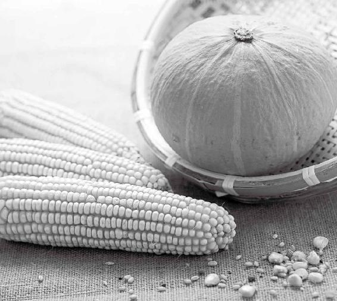
梁冬：除了吃以外，平常还有一些什么东西是对肾比较有帮助？
徐文兵：补肾是因为它在漏，在泄的情况下，我们才去补肾。还有的人是得了肾实证。
该尿的东西尿不出来，这是实证；不该尿的东西，你老在那儿漏，这是虚证。
梁冬：肾结石算不算？
徐文兵：前列腺的问题，尿不出来尿的问题，肾结石的问题，肾里边长肿瘤以及膀胱里边长肿瘤等等，都是因为补过头了。该尿的东西尿不出来，这是实证；不该尿的东西，你老在那儿漏，这是虚证。
“道可道，非常道。”“道”一说出来就变了。所以，你一定要根据自己的体质、时间、地点、场合去调。最好的办法，不是去我的博客上描述一番症状，让我出主意。而是在当地找一个好大夫，让他帮你看看。我告诉你，很多好大夫都在民间。
梁冬：还有一个好方法就是每天晚上尽量早点睡觉。黑夜就相当于四季中的冬天，是我们养肾，养精蓄锐的好时机。睡上一个好觉，第二天你就能生龙活虎，生机勃勃去奋斗、打拼。但现在的人是熬着夜来伤自己的精。
黑夜就相当于四季中的冬天，是我们养肾，养精蓄锐的好时机。